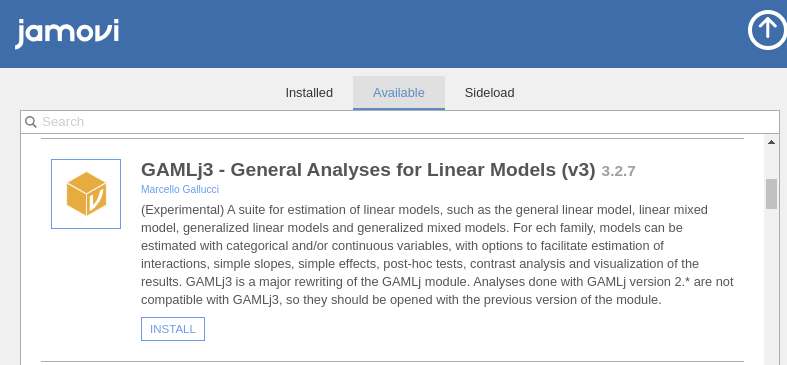

GAMLj
3.0.0
General Analyses for the Linear Model in Jamovi
This documentation it is being updated toward GAMLj version 3 and above. You still find much of the material suitable for GAMLj version 2. In case you want to read documentation that applies only to version 2, please go to Version 2 docs.
More Info
If you are interested in more information about the statistical models that can be estimated by GAMLj, and their results interpretation, you can read GAMLj models, a (in progress) web book companion to the module.
General, Mixed and Generalized and Generalized Mixed Models module for jamovi.

GAMLj offers tools to estimate, visualize, and interpret General Linear Models, Mixed Linear Models and Generalized Linear Models with categorical and/or continuous variables, with options to facilitate estimation of interactions, simple slopes, simple effects, post-hoc tests, etc.
- ANOVA and Regression approach
- Continuous and categorical independent variables
- F-test, LR tests, and parameter estimates
- Confidence intervals, standard, profile and bootstrap
- Moderation made easy
- Simple slopes analysis
- Simple effects analysis
- Simple interaction analysis
- Post-hoc analysis
- Contrasts analysis
- Plots for any order of interactions
- Automatic selection of best estimation methods and degrees of freedom selection
- Type III estimation
- A large set of effect size indices, depending on the model being estimated, such as \(\eta^2\), \(\omega^2\), \(\epsilon^2\), and Cohen’s \(d\), both partial and not partial.
Available models are:
- OLS Regression (GLM)
- OLS ANOVA (GLM)
- OLS ANCOVA (GLM)
- Random coefficients regression (Mixed)
- Random coefficients ANOVA-ANCOVA (Mixed)
- Logistic regression (GZLM)
- Logistic ANOVA-like model (GZLM)
- Probit regression (GZLM)
- Probit ANOVA-like model (GZLM)
- Multinomial regression (GZLM)
- Multinomial ANOVA-like model (GZLM)
- Poisson regression (GZLM)
- Poisson ANOVA-like model (GZLM)
- Overdispersed Poisson regression (GZLM)
- Overdispersed Poisson ANOVA-like model (GZLM)
- Negative binomial regression (GZLM)
- Negative binomial ANOVA-like model (GZLM)
- Ordinal regression (GZLM)
- Ordinal ANOVA-like model (GZLM)
- Mixed Logistic regression (GMixed)
- Mixed Logistic ANOVA-like model (GMixed)
- Mixed Probit regression (GMixed)
- Mixed Probit ANOVA-like model (GMixed)
- Mixed Multinomial regression (GMixed)
- Mixed Multinomial ANOVA-like model (GMixed)
- Mixed Poisson regression (GMixed)
- Mixed Poisson ANOVA-like model (GMixed)
- Mixed Overdispersed Poisson regression (GMixed)
- Mixed Overdispersed Poisson ANOVA-like model (GMixed)
- Mixed Negative binomial regression (GMixed)
- Mixed Negative binomail ANOVA-like model (GMixed)
- Mixed Ordinal regression (GMixed)
- Mixed Ordinal ANOVA-like model (GMixed)
Please visit the sub-modules pages for details:
Main Sub-Modules
Examples
Some worked out examples of the analyses carried out with jamovi GAMLj are posted here (more to come)
General Linear Models Examples
Linear Mixed Models Examples
Generalized Linear Models Examples
Generalized Mixed Models Examples
Details
Some more information about the module specs can be found here
Quality control
Please check the rosetta store for alignment with other software results and possible discrepancies.
Installation
If you didn’t already, install jamovi and run it. Select the jamovi modules library and install GAMLj from there

You will first need to download Jamovi.
Install in R
To install it in R, simple use:
devtools::install_github("gamlj/gamlj")
Release notes
Please check out the Release notes.
Comments?
Got comments, issues or spotted a bug? Please open an issue on GAMLj at github or send me an email